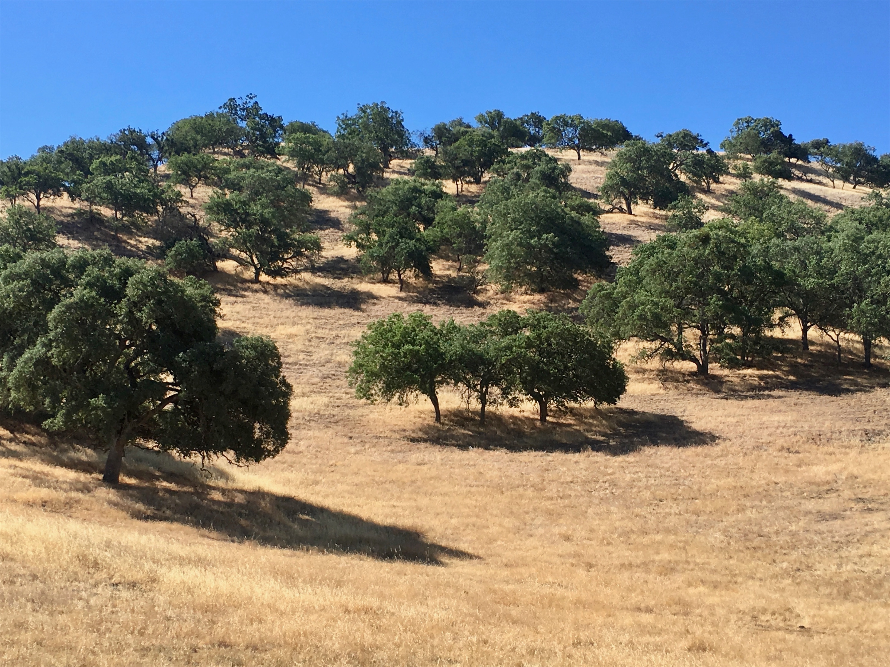

Friday, Jun 22, 2018, 1:08 PM PDT
Foothills Visitor Center, Sequoia National Park, CA, United States
91°F Sunny
91°F Sunny
![]()
6/21 West Pinnacles Visitor Center, CA -> King City, CA 26 mi, 1 hr
6/22 King City, CA -> Foothills Visitor Center, CA 161 mi, 4 hr
6/22 Foothills Visitor Center, CA -> Wuksachi Lodge, CA 23 mi, 1.75 hr
6/23 Wuksachi Lodge, CA -> Giant Forest RT 24 mi, 3 hr
Trip Total: 4,537 mi
From Pinnacles, we stayed overnight in nearby King City, and in the morning headed east for Sequoia. The scenery started out with pure golden hills dotted with green trees while we headed down the winding road through hills and valleys. Eventually, we hit the massive San Joaquin valley, with endless farms of every kind of produce, including many pistachio tree groves. Finally, the Sierra Nevada mountain range came into view, and we started our climb into the park, passing the scenic Lake Kaweah reservoir before the entrance. Road construction slowed us down, but we slowly made our way up to 7,000 feet, and started to see our first massive Sequoia trees. Eventually, we ended up at our home for the next three nights, the very nice Wukaschi Lodge.
The next morning, after an early breakfast, we drove back down to the Giant Forest area, and we were rewarded with 55 degrees and sun, and were blessed with having the normally busy park mostly to ourselves. We saw many deer out early too. Our first stop was General Sherman, the largest tree on earth by volume. It is 275 ft tall, 25 ft in diameter, weighs 1,385 tons, and is 2,300 - 2,700 years old! Deb spotted a deer resting in the tall grass nearby. We then hiked the Big Trees Trail, which circled a wetter grassland area that was ringed by giant sequoias. We saw marmots, deer, and delicate wildflowers to contrast with this collection of massive trees. We then visited the nearby Giant Tree Museum, and went back to the lodge to rest. In the afternoon, Brad realized that one of us (hint: not Deb) found the wrong tree earlier, so we went back to see the real General Sherman, along with a sea of humanity taking pictures.
Overall, this park is so far our favorite!
